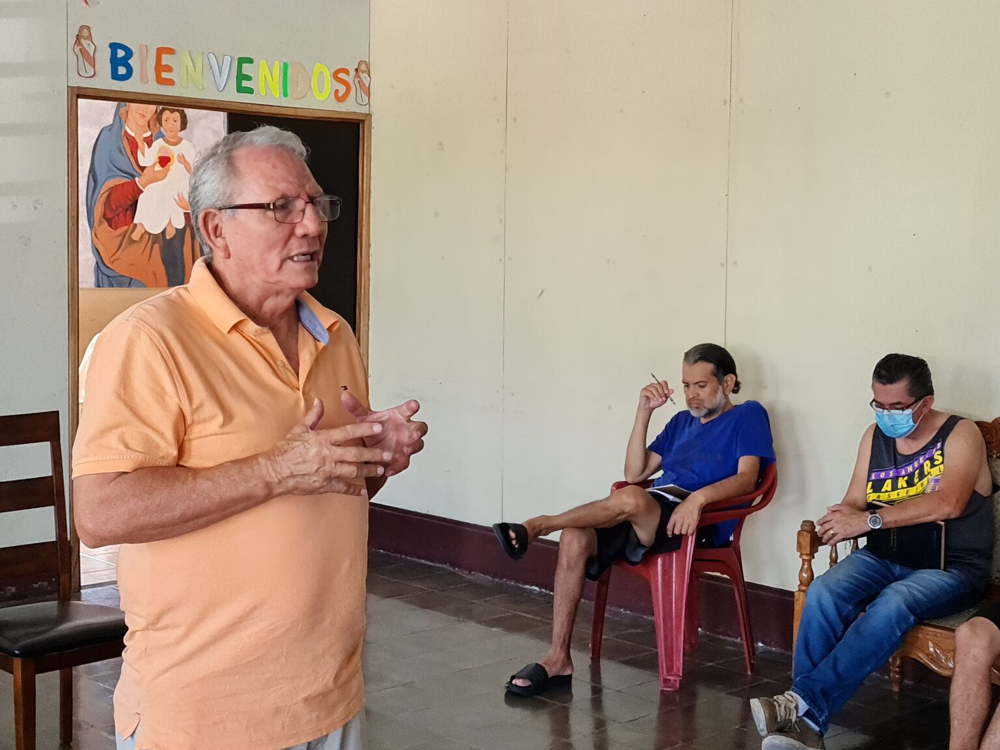
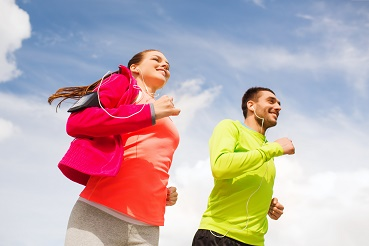

El alcoholismo en los jóvenes es una problemática grave que está destruyendo vidas y familias en todo el país. Según la Organización Mundial de la Salud (OMS), el consumo de alcohol es responsable de más del 5% de todas las muertes anuales en el mundo, y lamentablemente, los jóvenes son una de las poblaciones más afectadas.
En Renacer Puebla, hemos tomado acción. Actualmente, contamos con centros de ayuda en Atlixco, Zaragoza y Zacatlán, donde brindamos asistencia psicológica gratuita a jóvenes en situación de calle y en riesgo de caer en el alcoholismo. Con el apoyo de más de 200 voluntarios, hemos logrado transformar vidas, ayudando a cientos de personas a encontrar un camino libre de adicciones.
Pero nuestra misión no termina aquí. Queremos expandir nuestra ayuda a todo el país, llegar a más jóvenes que nos necesitan y ofrecerles una oportunidad real de cambio. Para lograrlo, necesitamos más manos, más corazones dispuestos a ayudar. Necesitamos psicólogos, trabajadores sociales, voluntarios, donadores y cualquier persona que quiera aportar su granito de arena para construir un México con menos alcoholismo juvenil.
Pero necesitamos tu ayuda. Queremos expandir nuestra red de apoyo a más ciudades de Puebla y eventualmente a todo el país. Necesitamos más voluntarios, más profesionales en salud mental, más manos dispuestas a salvar vidas. Cada donación, cada hora de tu tiempo, cada gesto de apoyo suma y hace una diferencia real en la vida de alguien que lucha contra la adicción.
Si alguna vez has sentido la impotencia de ver a alguien cercano perderse en el alcohol, si te duele ver a jóvenes desperdiciar su futuro, te invitamos a formar parte de Renacer Puebla. Juntos podemos devolverle la esperanza a quienes creen que ya no hay salida.
La lucha contra el alcoholismo juvenil es un reto enorme, pero con el esfuerzo de todos, podemos hacer la diferencia. Únete hoy y ayúdanos a construir un futuro libre de adicciones.
Los estudios han demostrado que el consumo temprano de alcohol puede derivar en problemas graves de salud mental, enfermedades hepáticas y aumento de la violencia intrafamiliar. Es por eso que la prevención es clave. Queremos implementar talleres educativos en escuelas, generar campañas de concientización y ofrecer apoyo integral a familias afectadas.
Si quieres ser parte de esta gran labor, te invitamos a unirte a nosotros. No importa si puedes donar una hora de tu tiempo o si deseas contribuir con insumos, cada pequeño esfuerzo suma. Juntos podemos hacer la diferencia.
¡Únete a Renacer Puebla y ayudemos a nuestros jóvenes a tener un futuro libre de adicciones!
Volver a Inicio